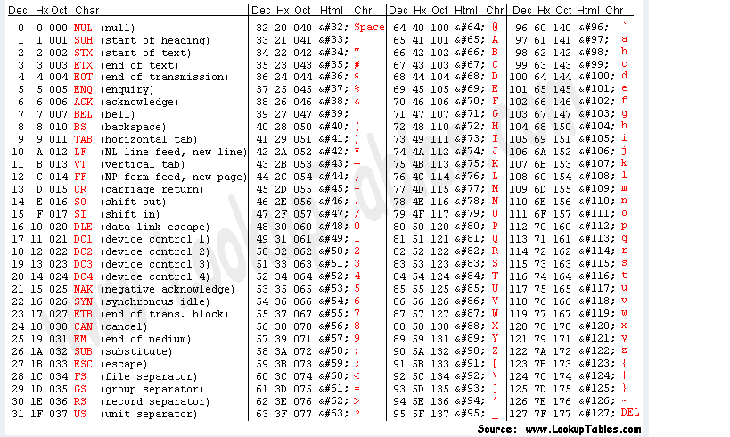

В интернете я нашел только одну статью (в 2017 году), описывающую как управлять моторами гироскутера, используя штатный драйвер двигателей гироскутера.
https://hackaday.com/2016/06/10/reverse-engineering-hoverboard-motor-drive/
http://drewspewsmuse.blogspot.ru/2016/06/how-i-hacked-self-balancing-scooter.html
https://github.com/addibble/HoverboardController
https://github.com/OpHaCo/hoverbot
https://www.youtube.com/watch?v=YHwwmKngslk
https://www.youtube.com/watch?v=VRblWU34dUU
https://www.youtube.com/watch?v=kbsE_kjdLKA
https://www.youtube.com/watch?v=LJzoy2TJXFk
https://www.youtube.com/watch?v=X4em6_nVVQU
https://www.youtube.com/watch?v=Q4zEAsdSWl0
Силовой разьем https://tiu.ru/p260280859-silovoj-razem-xt60.html
https://www.youtube.com/watch?v=x8sz-r1y4hE
Крутая статья https://geektimes.ru/company/mailru/blog/288534/
Управление бесколлекторным мотором http://radioparty.ru/mob-programm-c-avr/636-lesson-bldc-sensorless-ir2101-hall-sensor
Крутаа статья https://geektimes.ru/post/271136/
https://geektimes.ru/company/npf_vektor/blog/269486/
https://www.drive2.ru/b/1835474/
Open Source контроллер http://vedder.se/2015/01/vesc-open-source-esc/
http://radioparty.ru/prog-avr/program-c/611-lesso
Контроллер для HDD двигателяhttps://www.youtube.com/watch?v=nufQf7oFBvg
Включение без регулятора со щеткой https://www.youtube.com/watch?v=z1IR7s_kxGQ
https://www.youtube.com/watch?v=8xGrPpXyc5w
Управление бесколлекторным двигателем с датчиками Холла http://www.avislab.com/blog/brushless03/
Nine BOt гироскутер https://www.youtube.com/watch?v=QAQ4ugWidlY
Homemade https://www.youtube.com/watch?v=XeqC7nnae_Y
Робофорум http://roboforum.ru/forum104/topic13195-30.html?style=9
https://www.youtube.com/watch?v=TgSP7Ly1cUA
https://v-kudryashov.livejournal.com/609.html
Очень хорошая статья с обьяснением откуда взялось http://radiohlam.ru/?p=1383
http://www.avislab.com/blog/brushless03/
Продолжение http://radiohlam.ru/?p=1441
Реверс бесколлекторного двигателя http://electrotransport.ru/ussr/index.php?topic=1788.0
Скорость
Разбор протокола:
signed int sp = 20;Serial.write((sp >> 8) & 0xFF);
signed int в Arduino UNO занимает 2 байта, int16_t в
STM32 занимает тоже 2 байта.
0000 0000 0000 0000
mySerial.write9(256);
mySerial.write9(sp & 0xFF);
mySerial.write9((sp >> 8) & 0xFF);
Что значит это всё ?
Cначала отправляется младший байт
sp & 0xFF
Потом отправляется старший байт
(sp >> 8) & 0xFF
sp >> 8 значит что мы сдвигаем двоичное представление числа
sp (20) на 8 разрядов вправо
20 (10тичная) = 0000 0000 0001 0100 (двоичная)
Для того чтобы управлять моторами, мы должны принимать на вход скорость в виде числа, для левого и правого моторов.
Пусть скорость для моторов задается одним байтом.
Тогда для левого мотора мы будем использовать старшие разряды, а для правого мотора будем использовать младшие разряды.

Сообщения
'1' - 49 - 0x31
'2' - 50 - 0x32
'3' - 51 - 0x33
'4' - 52 - 0x34
1 - 255 255
2 - 254 255
20 - 236 255
40 - 216 255
60 - 196 255
80 - 176 255
0 - 0 0
- 1 1 0
- 2 2 0
-20 - 20 0
Пусть диапазон будет от -7 до +7 попугая.
Кодируется все одним байтом 0 - 255
Первые 4 бита для первого мотора, вторые 4 бита для второго мотора.
Рассмотрим 4 бита для первого мотора
1111
Самый старший бит задает направление вращения колеса, 1 - вперед, 0 - назад.
При вращении вперед скорость задается остальными тремя битами, двоичным числом от 001 до 111, т.е. 7 скоростей вперед. 001 - самая медленная, 111 - самая быстрая.
При вращении назад скорость задается, двоичным числом от 111 до 001 , т.е. 7 скоростей назад. 111 - самая медленная, 001 - самая быстрая.
Тоже самое для второго мотора.
Пример принятого байта:
1000 1000 - оба колеса не двигаются.
1111 1111 - оба колеса вперед, с максимальной скоростью.
0111 0111 - оба колеса назад, с минимальной скоростью.
1001 0111 - первое колесо вперед с минимальной скоростью, второе назад с минимальной скоростью.
0110 1101 - первое колесо назад со скоростю 2, второе колесо вперед со скоростью 5.
Комбинация 0000 0000 - инвертировать разрешающий сигнал.
Комбинациии 10000000 и 00001000 - не определены.
Тогда
Serial port terminal - sudo gtkterm
| Провода с д.Холла\Провода от фаз двигателя | 123 | 132 | 213 | 231 | 312 | 321 | |||
| 123 | Вперед | Нет | |||||||
| 132 | Нет | ДА Назад | Нет | ||||||
| 213 | |||||||||
| 231 | |||||||||
| 312 | |||||||||
| 321 | |||||||||